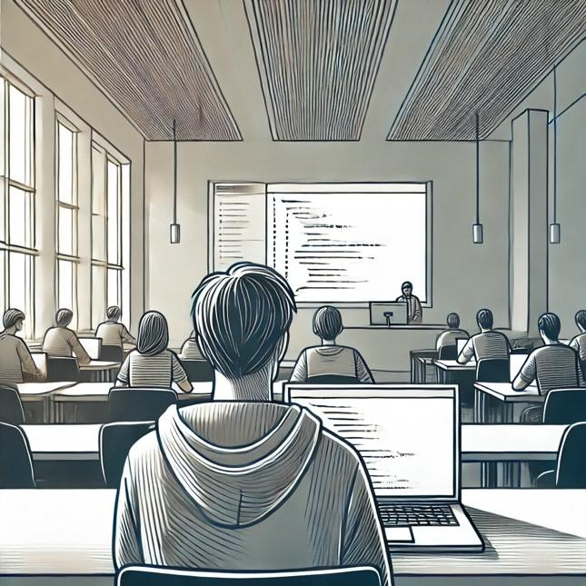

M y_J O U R N E Y
บางคนบอก4ปีนั้นยาวนาน แต่มันก็ไม่นานขนาดนั้น ซึ่งในช่วง 4 ปีที่ผมจะได้ศึกษาในสาขาวิทยาการคอมพิวเตอร์ของมหาวิทยาลัยธรรมศาสตร์นี้ ผมอยากที่จะพัฒนาทักษะที่สำคัญหลายอย่าง ทั้งการเขียนโปรแกรม การแก้ปัญหาที่ซับซ้อน และการทำงานร่วมกัน
ผมจะได้เรียนรู้พื้นฐานของการเขียนโปรแกรมและโครงสร้างข้อมูลเบื้องต้น ซึ่งจะทำให้ผมสามารถพัฒนาทักษะการคิดเชิงตรรกะและการแก้ปัญหาได้เพื่อใช้ในอนาคตอันใกล้ต่อไปจนถึงอนาคตอีกไกล
ผมจะเริ่มทำโปรเจคที่เกี่ยวข้องกับการพัฒนาเว็บและซอฟต์แวร์ขนาดเล็ก โดยเน้นการทำงานเป็นทีมและการนำความรู้ไปประยุกต์ใช้ในโลกแห่งความจริง
ในปีนี้ผมจะได้เรียนรู้เทคโนโลยีใหม่ ๆ เช่น Machine Learning และการพัฒนาซอฟต์แวร์ขั้นสูง รวมถึงการวิเคราะห์ข้อมูลอย่างมีประสิทธิภาพด้วย
ในปีสุดท้าย ผมจะต้องเตรียมความพร้อมสำหรับการทำงานในสายอาชีพด้านไอที โดยการฝึกงานและการเข้าร่วมโครงการวิจัยต่างๆ
-_-_-_-_-_-_-_-_-_-_-_-_-_-_-_-_-_-_-_-_-_-_-_-_-_-_-_-_-_-_-_-_-_-_-_-_-_-_-_-_-_-_-_-_-